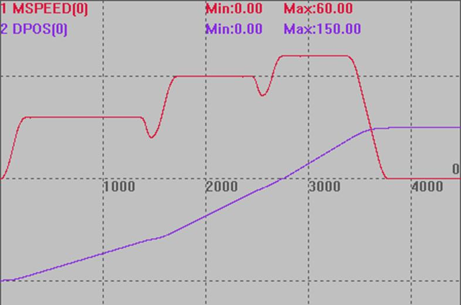

|
类型 |
轴参数 |
|
描述 |
自定义速度的SP运动的开始速度，这个参数被带入运动缓冲。 只有使用了带SP的运动指令才生效。 不使用时请设置较大值。控制器默认值1000。 |
|
语法 |
可读：VAR1 = STARTMOVE_SPEED或VAR1 = STARTMOVE_SPEED(轴号) 可写：STARTMOVE_SPEED = expression或STARTMOVE_SPEED(轴号) = expression |
|
适用控制器 |
通用 |
|
例子 |
RAPIDSTOP(2) WAIT IDLE(0) BASE(0) '选择XY轴 DPOS = 0 MPOS = 0 ATYPE=1 '脉冲方式步进或伺服 UNITS = 100 '脉冲当量 SPEED = 100 ACCEL = 200 DECEL = 200 SRAMP=100 'S曲线 MERGE = ON '启动连续插补 TRIGGER
'第一段 FORCE_SPEED = 30 '第一段速度30 STARTMOVE_SPEED = 1000 '不设置，默认值1000 ENDMOVE_SPEED = 1000 '不设置，默认值1000 MOVESP(40)
'第二段 FORCE_SPEED = 50 '第二段速度50 STARTMOVE_SPEED = 20 '第二段的起始速度20 ENDMOVE_SPEED = 40 '结束速度40 MOVESP(50)
'第三段 FORCE_SPEED = 60 '第三段速度60 STARTMOVE_SPEED = 1000 '不设置，默认值1000 ENDMOVE_SPEED = 1000 '不设置，默认值1000 MOVESP(60) END
速度和位置曲线 MSPEED(0)垂直刻度50 DPOS(0)垂直刻度100，偏移-100  |
|
相关指令 |